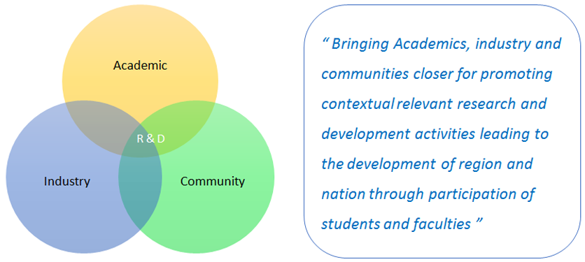

SIRO

The Recognition Scheme for Scientific and Industrial Research Organisations (SIROs) will bring together voluntary organizations operating in non-commercial sector with a view to promote their activities in the area of scientific and industrial research, design and development of indigenous technology to achieve technological self-reliance and minimize foreign inputs.
The Organizations seeking support under the scheme will undertake activities for the extension of knowledge in the field of natural and applied sciences, agricultural, medical and social sciences. Functional SIROs having clearly stated objectives of undertaking scientific research, broad based Governing Council, Research Advisory Committee, research personnel, infrastructure facilities for research, well defined, time bound research programmes and clearly stated objectives of undertaking scientific research are considered eligible for recognition by DSIR.
The SIROs recognized by DSIR (other than hospitals) are eligible for customs duty exemption and excise duty waiver on import of equipment/instruments and their spares and consumables; under notification nos. 51/96-Customs dated 23.7.1996 and 10/97-Central Excise dated 1.3.1997 respectively. The recognition would help them to evolve research infrastructure by way of overall administrative support assistance and other assistance as may be necessary for the efficient working of a research-oriented organization.
MIT has been recognized as a SIRO by the Department of Scientific and Industrial Research, Ministry of Science & Technology, Government of India.